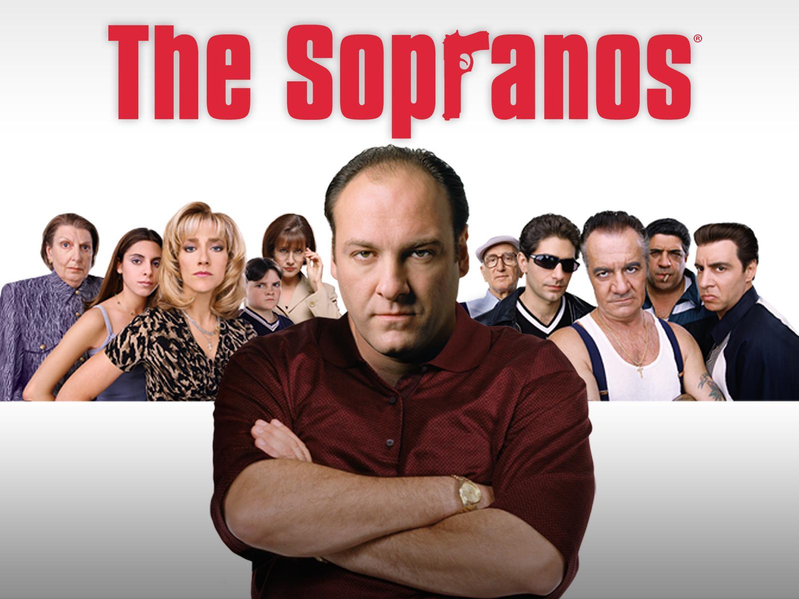
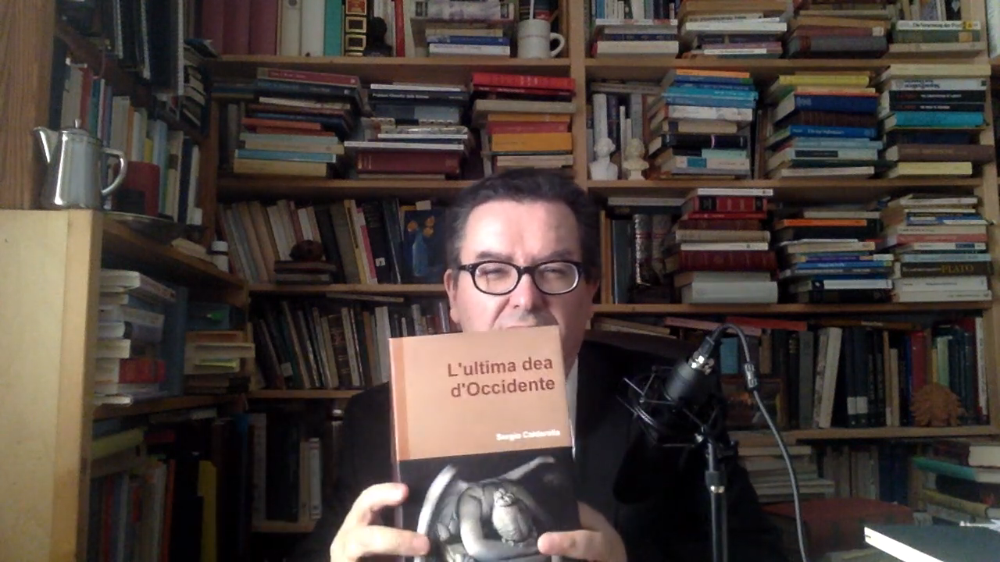
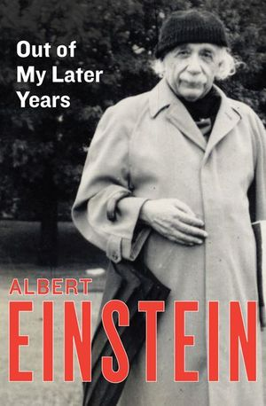
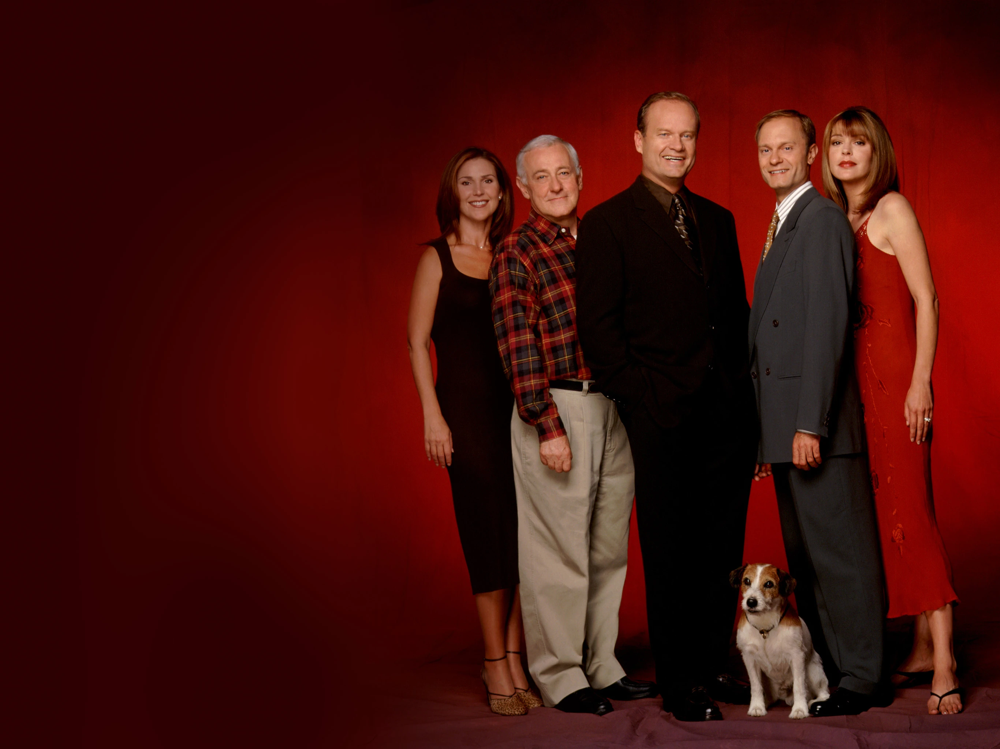

1:35:36 · 9 OPERE
Gabor Maté: la sofistica e l'inquietante.
Il filo del discorso
Il relatore prende spunto da un confronto pubblico di Gabor Maté con una donna israeliana per interrogare la differenza fra ricerca della verità e capacità di persuadere. La lunga introduzione discute l’autorità degli esperti, il rischio di trasformare le persone in categorie e il rapporto fra interessi economici e rappresentazioni del bisogno. Una scena dei Soprano, nella quale Tony reagisce alla possibile diagnosi del figlio, diventa un esempio della sua diffidenza verso la medicalizzazione; i successivi racconti sull’alimentazione dei cani, sull’immunità, sui sistemi sanitari e sulla conferenza climatica di Baku sono digressioni argomentative del parlante, da distinguere dalle verifiche scientifiche e documentali. Al centro della riflessione sta l’opposizione fra un dialogo che ammette la correzione e una comunicazione diretta a conquistare l’adesione. Il relatore collega l’educazione al conformismo, la circolazione delle immagini e l’industria culturale a una perdita di autonomia; propone inoltre una lettura teologica del male che si presenta come bene. Il richiamo al proprio testo L’ultima dea d’Occidente e a un passo di Einstein sugli assiomi etici sostiene la sua idea che un giudizio debba confrontarsi con l’esperienza. Il racconto della vecchia poltrona del padre in Frasier offre invece un’immagine dell’unicità: la storia personale di un oggetto non è sostituibile dal suo prezzo o dalla sua eleganza. Nella seconda parte viene commentato più da vicino il confronto di Maté. Il relatore legge le richieste di maggiore contesto storico, le contestazioni di singole notizie, il richiamo alla compassione e le scuse come mosse che, a suo giudizio, spostano la discussione dai fatti alla superiorità morale dell’oratore. L’arte di ottenere ragione di Schopenhauer, Il processo di Kafka e un’allusione a Cappuccetto Rosso diventano strumenti per descrivere l’asimmetria fra chi controlla la scena e chi formula una domanda. La conclusione invita lo spettatore a riconoscere ripetizioni, concessioni apparenti e richieste implicite di fiducia. Le accuse di manipolazione e le interpretazioni delle intenzioni di Maté, dei mezzi d’informazione e del pubblico restano valutazioni del relatore. Anche il suo resoconto riconosce che Maté ammette l’esistenza di massacri: contestare determinate ricostruzioni non equivale automaticamente a negare ogni uccisione. La scheda distingue le responsabilità degli autori di violenze dalle popolazioni civili, le fonti storiche dalle analogie polemiche e il giudizio morale dalla diagnosi clinica; le note precisano i principali punti fattuali controversi.
I libri nel discorso

The Sopranos (I Soprano, serie televisiva)
Artwork promozionale ufficiale della serie The Sopranos: Artwork promozionale ufficiale della serie The Sopranos
Artwork della serie fornito dalla scheda Prime Video, non copertina di un libro né fotogramma certificato dell’episodio citato. Nessuna edizione home video riconosciuta nella fonte.
riconoscimento_vocale_locale
Passaggio 1:08 ↗ · Fonti e libro ↗
Bibbia
Identificazione probabile
Copertina: San Paolo, 2014 · Nuova Versione dai Testi Antichi · edizione di riferimento
riconoscimento_vocale_locale
Passaggio 30:10 ↗ · Fonti e libro ↗
L’ultima dea d’Occidente. Saggio sulla razionalità inesorabile
Foto parziale del volume mostrato a 2054 s; edizione non determinata: Fotogramma nativo intero del volume mostrato nel filmato Zbigniew Brzezinski: La grande scacchiera, a 2054 secondi. Titolo L’ultima dea d’Occidente e autore Sergio Caldarella leggibili sulla coperta; mani nella parte inferiore e bordo inferiore del volume fuori dall’inquadratura. Fotografia parziale del libro nel suo contesto, non una copertina editoriale autonoma, frontespizio o ricostruzione. Sottotitolo, anno, editore e ISBN non leggibili; specifica edizione non determinata.
Il titolo esteso Saggio sulla razionalità inesorabile e il 2018 provengono dalla bibliografia aggiornata dell’autore, non da questo fotogramma o da colophon. Nessun ritaglio, raddrizzamento, ritocco, aumento della risoluzione o completamento delle zone coperte: l’intera inquadratura è conservata.
Segmenti 290–296, 2267,84–2308,84 s: il relatore presenta come proprio un testo che si intitola L’ultima dea d’Occidente (titolo a 2286,07 s), richiamandone il tema dell’Homo Novus e dell’uso della tecnologia. Autocitazione e titolo breve espliciti nella fonte automatica; sottotitolo e 2018 non pronunciati nel passo. Nessuna edizione identificata.
Passaggio 38:06 ↗ · Fonti e libro ↗
The Laws of Science and the Laws of Ethics
Identificazione probabile
Copertina della raccolta contenitrice Out of My Later Years, Open Road 2011: Copertina della raccolta contenitrice Out of My Later Years, Open Road 2011
Copertina autentica dell’ebook autorizzato Open Road / Philosophical Library, ISBN 9781453204894, contenente il saggio 1950. Non copertina autonoma del saggio, non facsimile della prima edizione, non edizione riconosciuta nel video.
riconoscimento_vocale_locale
Passaggio 40:10 ↗ · Fonti e libro ↗
Frasier (serie televisiva originale, 1993–2004)
Fotografia promozionale ufficiale del cast di Frasier 1993–2004: Fotografia promozionale ufficiale del cast di Frasier 1993–2004
Fotografia ufficiale della serie originale, con il cast ed Eddie, pubblicata nella scheda Paramount. Non copertina, locandina, fotogramma dell’episodio o immagine del revival. Nessun titolo o logo aggiunto.
riconoscimento_vocale_locale
Passaggio 58:19 ↗ · Fonti e libro ↗
L’arte di ottenere ragione. Esposta in 38 stratagemmi
Copertina: Adelphi, Piccola Biblioteca 274, 1991, 124 pagine, ISBN 9788845908569. Traduzione di Nicola Curcio e Franco Volpi, cura di Franco Volpi. Trattato postumo noto come Eristische Dialektik.
Copertina integrale autentica Adelphi arancione: autore, titolo, sottotitolo, numero 274 e marchio. Sostituita la versione di condivisione sociale con il file specifico della copertina individuato nella pagina dell’editore. Il collegamento al richiamo è probabile; non si dichiara che il relatore abbia pronunciato questo titolo.
riconoscimento_vocale_locale
Passaggio 1:04:42 ↗ · Fonti e libro ↗
Il processo
Copertina: Adelphi · gli Adelphi, 2020 · edizione di riferimento
riconoscimento_vocale_locale
Passaggio 1:06:53 ↗ · Fonti e libro ↗
Corano
Copertina: BUR Classici, edizione aggiornata
Edizione con introduzione, traduzione e commento di Alessandro Bausani, a cura di Layla Mustapha Ammar. Anno della ristampa non dedotto dalla copertina; nessuna edizione attribuita al video.
riconoscimento_vocale_locale
Passaggio 1:22:50 ↗ · Fonti e libro ↗Cappuccetto Rosso
Identificazione probabile
Versione di Perrault: Cappuccetto Rosso: Copertina della versione attribuita a Charles Perrault, Giunti, Morbide fiabe, 19 luglio 2017, 64 pagine, ISBN 9788809856936. Il contributo cita la fiaba senza determinare la redazione: questa è una edizione illustrativa dichiarata.
Copertina autentica Giunti, verde con bambina incappucciata e lupo, nome Charles Perrault e marchio dell’editore. Il finale non viene ricostruito arbitrariamente secondo i Grimm o Perrault, perché il relatore non lo precisa. Il segnaposto nocover del catalogo De Agostini è stato visto e respinto, mai esportato.
riconoscimento_vocale_locale
Passaggio 1:32:20 ↗ · Fonti e libro ↗Minutaggi ricavati da testi automatici, da riascoltare. Le identificazioni probabili sono segnalate accanto ai libri.